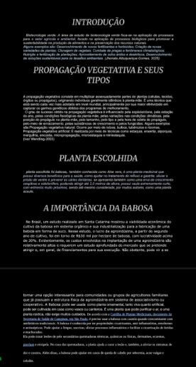

Meus projetos

Meu Projeto Personalizado
Este projeto é um projeto desenvolvido em 1 dia e foi meu primeiro contato com o git GitHub

Uma pesquisa aprofundada sobre plantas na biotecnologia
Este projeto foi desenvolvido para se aprofundar na biotecnologia.

Roteiro para apresentação de trabalho em matemática 2
Este projeto é um roteiro com as falas dos personagens do trabalho de matemática 2.